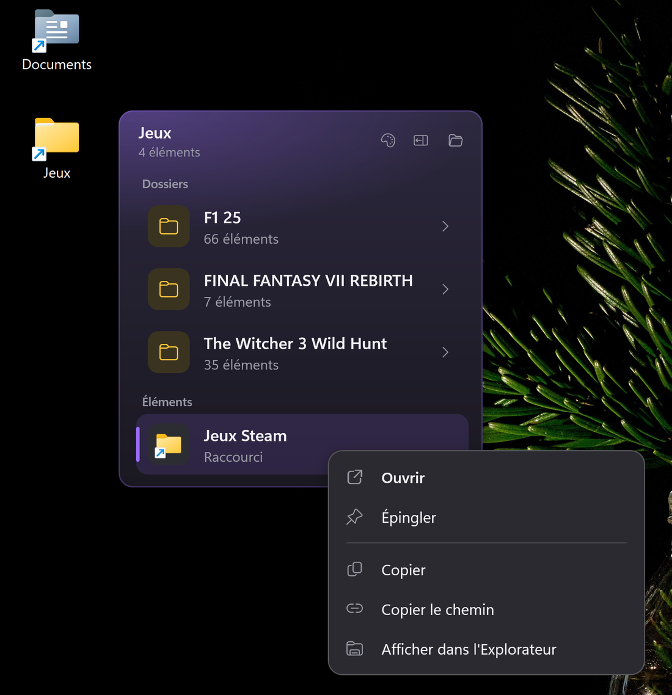
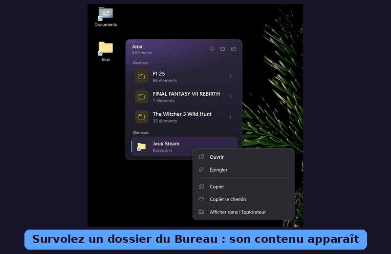
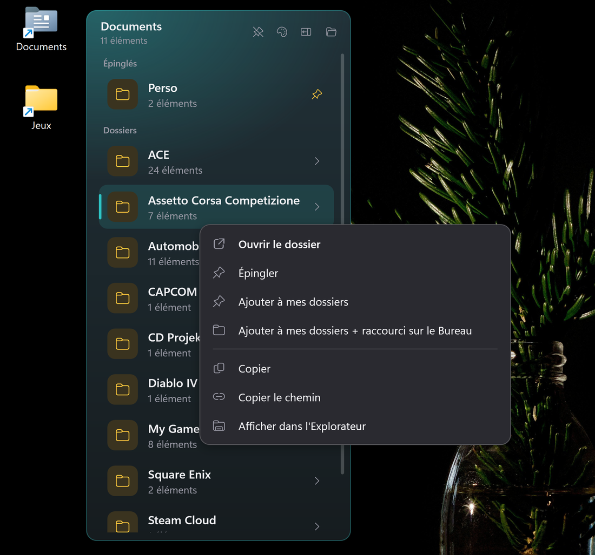
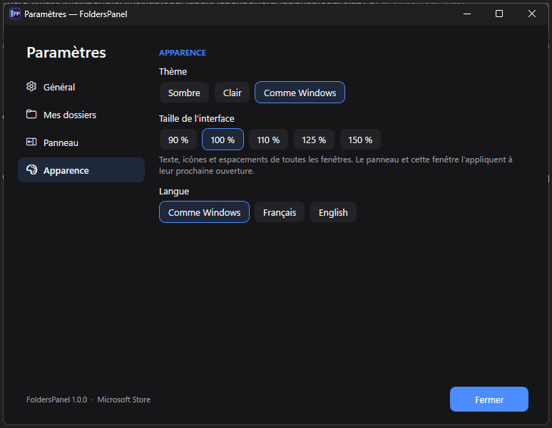

Vos dossiers de travail, à un raccourci de distance.
Your work folders, one shortcut away.
Un panneau latéral glisse depuis le bord de l'écran avec Alt + E et affiche vos dossiers, chacun avec sa couleur. Survolez un dossier du Bureau : son contenu apparaît aussitôt, sans ouvrir l'Explorateur.
A side panel slides in from the edge of the screen with Alt + E and shows your folders, each with its own color. Hover a desktop folder: its contents appear right away, without opening File Explorer.

Moins de clics, plus de travail
Fewer clicks, more work done
Pensé pour ceux qui vivent dans leurs dossiers : projets, clients, partages réseau, téléchargements.
Built for people who live in their folders: projects, clients, network shares, downloads.
Panneau latéral
Side panel
Alt + E ou un clic sur l'icône FP près de l'horloge. Mes dossiers, recherche instantanée, récents et les plus utilisés.
Alt + E or a click on the FP icon next to the clock. My folders, instant search, recent and most-used items.
Aperçu au survol du Bureau
Desktop hover preview
Posez la souris sur un dossier du Bureau : son contenu s'affiche à côté. Ouvrez, naviguez, copiez un chemin, glissez un fichier vers Outlook ou Teams.
Rest the mouse on a desktop folder: its contents show up next to it. Open, browse, copy a path, drag a file into Outlook or Teams.
Discret et hors ligne
Quiet and offline
Aucune connexion réseau, aucune collecte. Thème clair, sombre ou comme Windows ; interface en français et en anglais.
No network connection, no data collection. Light, dark or system theme; English and French interface.

Comment ça marche
How it works


FAQ
Comment fonctionne l'essai gratuit ?How does the free trial work?
Le Microsoft Store vous donne 7 jours d'essai complet, puis propose l'achat (3,99 €, sans abonnement). Vos réglages sont conservés.
The Microsoft Store gives you a full 7-day trial, then offers the purchase (€3.99, no subscription). Your settings are kept.
Quelles données sont collectées ?What data is collected?
Aucune. L'application n'établit aucune connexion réseau ; réglages et historique restent sur votre ordinateur. Politique de confidentialité.
None. The app makes no network connection; settings and history stay on your computer. Privacy policy.
Le survol du Bureau modifie-t-il Windows ?Does the desktop hover change Windows?
Non. FoldersPanel lit seulement le nom de l'icône sous la souris, via l'accessibilité de Windows. La fonction se désactive globalement ou dossier par dossier.
No. FoldersPanel only reads the name of the icon under the mouse, through Windows accessibility. The feature can be turned off globally or per folder.
Quelle version de Windows ?Which Windows version?
Windows 10 (1809 ou plus récent) et Windows 11, 64 bits. Le runtime .NET est inclus, rien d'autre à installer.
Windows 10 (1809 or later) and Windows 11, 64-bit. The .NET runtime is included, nothing else to install.
Essayez FoldersPanel gratuitement
Try FoldersPanel for free
7 jours, toutes les fonctions, aucune carte demandée.
7 days, every feature, no card required.

 Obtenir sur le Microsoft StoreGet it from the Microsoft Store
Obtenir sur le Microsoft StoreGet it from the Microsoft Store